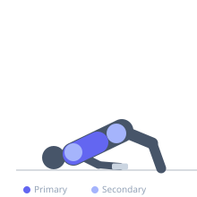
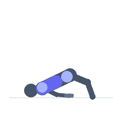

Exercise guide / Floor Dumbbell Flye with Glute Bridge Hold
Floor Dumbbell Flye with Glute Bridge Hold
A floor dumbbell flye performed while holding a glute bridge position throughout the set. The supine floor position provides a natural range-of-motion stop for the arms, protecting the shoulder, while the sustained hip bridge simultaneously activates the glutes and posterior chain. This exercise trains chest isolation alongside isometric hip extension, making it a time-efficient movement with significant glute and core co-activation.
Primary muscles
pectoralis major sternal
Secondary muscles
deltoid anterior
gluteus maximus
Stabilizers
infraspinatus
transverse abdominis
biceps femoris long head
Equipment
Dumbbell (Fixed)


Starting position
- Lie on the floor with knees bent and feet flat. Perform a glute bridge and hold the hips elevated. Hold one dumbbell in each hand above the chest with arms extended, palms facing each other.
Setup
- No equipment needed beyond two dumbbells. The bridge should be established and stable before the flye begins. Use flye-appropriate weight — lighter than pressing weight.
Steps
- Step 1: Perform a glute bridge: lift and hold the hips so body forms a line from knees to shoulders.
- Step 2: With arms extended above the chest, open them out to the sides in a wide arc — the flye.
- Step 3: Lower until the upper arms contact the floor. Hold the bridge throughout.
- Step 4: Bring the arms back together above the chest, squeezing the pectorals at the top.
- Step 5: Repeat for all reps, maintaining the bridge hold throughout the set.
Coaching cues
- Squeeze the glutes to keep the hips up — they must not drop during the fly
- Maintain the same elbow bend throughout — do not let the arms straighten completely
Breathing
- Inhale as the arms open, exhale as they close. Breathe steadily through the bridge hold.
Range of motion
- Open to floor contact on the arms. The floor stop protects the shoulder naturally.
Tempo
- 3-1-2-1 (3s open, 1s stretch, 2s close, 1s squeeze top)
Common mistakes
- Hips dropping during the flye — the bridge hold is as important as the flye
- Bending elbows excessively during the arc
- Using too heavy a weight, losing control at the bottom
Safety
- If unable to maintain both the bridge and the flye with good form, reduce dumbbell weight
- Use a mat for lower back and hip comfort during the bridge
Training
- hypertrophy: 10–15 reps
- hypertrophy: 3–4 sets
- Rest: {'hypertrophy': 75}